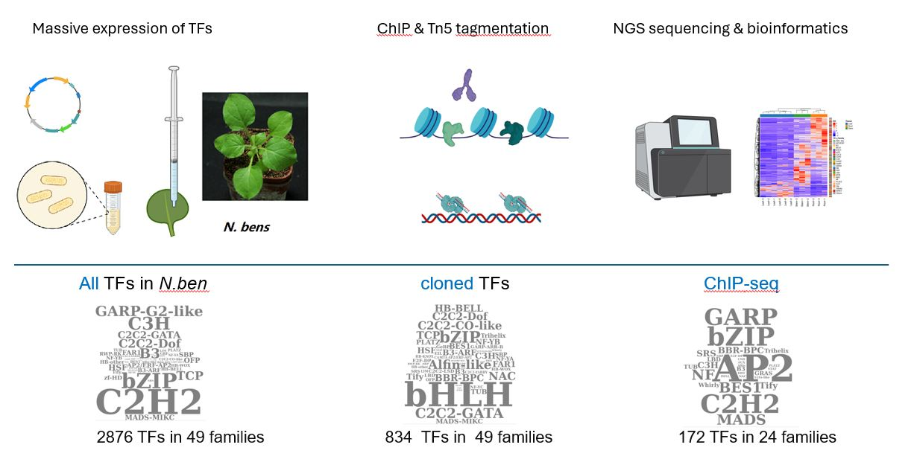
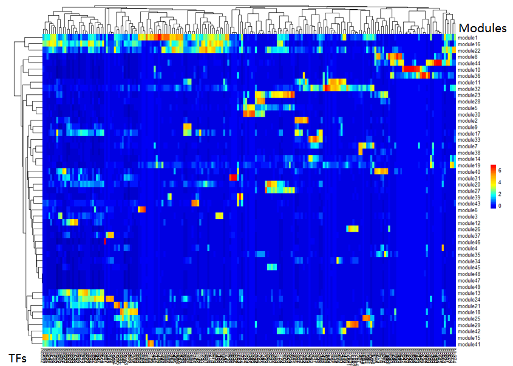

A transcription factor atlas of plant leaves
{kind=link}
Epigenetic modifications exert the regulation role through a complex interaction with trans-regulators along with the genome. Cistome refers to a collection of genomic regulatory elements interacting with a spectrum of proteins including transcription factors and regulators. To comprehensively profile the cistrome of plant leaves, I developed a novel assay combining Tn5-assisted ChIP-seq and Agrobacterium-mediated transient expression aiming to profile all the transcription factor (TF)-binding events in plants. In total, 834 out of total 2876 TFs were cloned into binary vector. Among them, 402 TFs were successively expressed and the ChIP-seq data of 172 TFs were accomplished. The data of this project is now available on NCBI BioProject: PRJNA743574.
Hierarchical Dirichlet Process clustering of the transcription factors and their genomic targets
{kind=link}
An overview of the genomic target of 172 TFs. The rows represent modules of genomic regions (Peaks of ChIP-seq), and the coloumns represent transcription factors clustered by Hierachical Dirichlet Process.